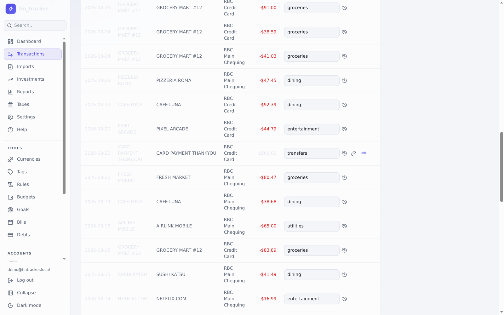

Transactions
Filter, edit, tag, and confirm suggestions on your money feed.
Find anything with the filter bar
Filter by text, category, account, date range, or tag. Clicking a tag anywhere in the app (a transaction row, the Rules page, search results) deep-links here with the tag pre-applied, so tags double as saved views.

One category, many tags
Every transaction has exactly one category — that is what budgets and reports add up. Tags are extra labels and you can attach several (e.g. a flight tagged travel and reimbursable). Create tags inline by typing a new name; it is created the moment you attach it.
Work the suggestion queue
The Suggestions panel proposes categories from three sources in order: your rules first, then learned payees (what you confirmed before), then the assistant. Press Run to generate a batch, confirm what is right, reject what is not — every confirmation teaches the app your preference.